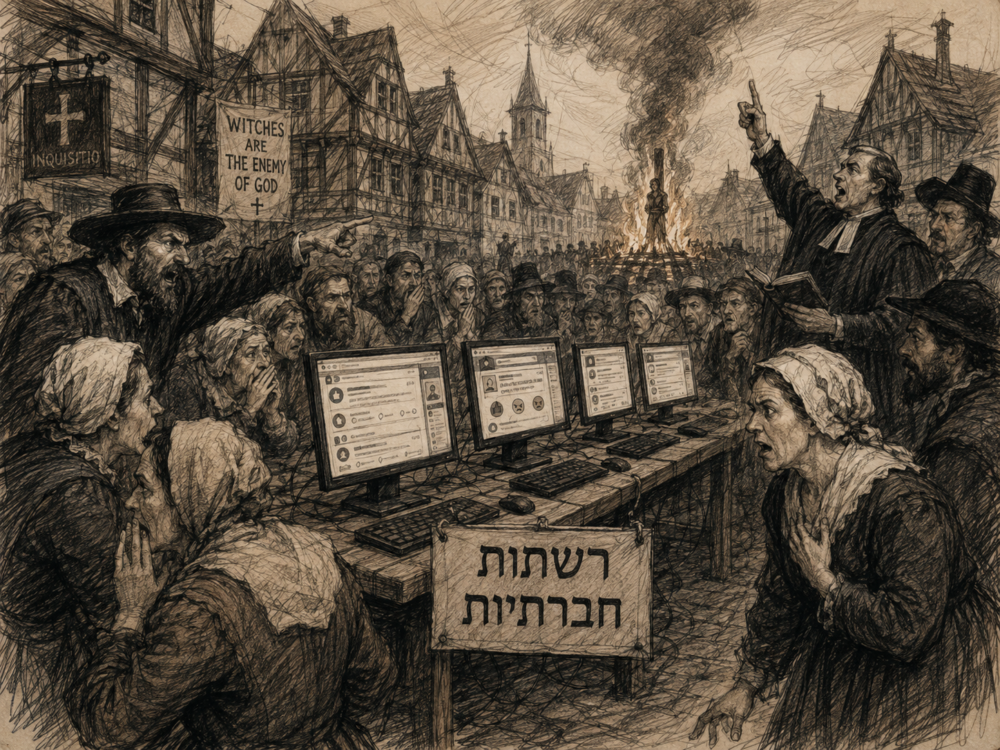

המכשפה, האויבת, המטפסת והמודחת
ארבעה סגנונות עתיקים של שנאת נשים — ישראל 2026

ציד המכשפות החדש: מהכיכר לפייסבוק

באירופה של המאות ה-16 וה-17, החברה הפנתה אצבע מאשימה כלפי נשים שנתפסו כחריגות. בישראל 2026, הכיכר הוחלפה בפיד, והלפידים בלייקים ותגובות נאצה. ניתחתי כ-4,000 תגובות לארבע דמויות מפתח, והתוצאות מצביעות על דפוסים שונים לחלוטין של איום ושנאה.
ארבע נשים, ארבעה סיפורים
לכאורה קל לחבר את ארבע הנשים תחת כותרת אחת: כולן בולטות, כולן דעתניות, כולן מעוררות רגשות חזקים — וכולן מקבלות מנות נדיבות של שנאה ברשת.
אבל כשקוראים את התגובות, רואים מיד שלא מדובר באותה שנאה.
שקמה ברסלר — המכשפה
בעיני מתנגדיה שקמה אינה סתם יריבה פוליטית. מייחסים לה כוח עצום: סרבנות, החלשת הצבא, פילוג המדינה, ולעיתים אפילו אחריות לאסון. היא נתפסת כאישה שמפעילה כוח גדול מאוד מחוץ למערכת הפוליטית הרשמית — ולכן גם כאיום.
אצל שקמה זה מגיע כמעט לממד מיתולוגי. בעיני אוהדיה היא אישה מבריקה, אמיצה, בעלת קריירה מדעית שהניחה בצד כדי להנהיג ציבור בשעת משבר. בעיני שונאיה היא כמעט כוח הרס בפני עצמו.
במובן הזה היא מזכירה את הדימוי הכפול של נתניהו: קוסם בעיני אוהדיו, מכשף בעיני אויביו. תלוי באיזה צד אתה.
נעמה לזימי — האויבת
אצל לזימי המתקפה הרבה יותר מחנאית. היא אינה רק נעמה לזימי. היא קפלן, היא השמאל, היא הדמוקרטים, היא יאיר גולן, היא המחנה כולו.
הוויכוח עמה הופך במהירות לוויכוח על מי רשאי למשול, מי מייצג את המדינה, מי מסוכן ומי הורס אותה. לזימי היא חיילת פעילה במלחמת המחנות, ולכן גם התוקפים שלה מדברים הרבה יותר בשפה של מלחמה פוליטית מאשר בשפה של לעג לכישלון אישי.
מאי גולן — המודחת
אצל מאי גולן השפה משתנה. הכישלון בפריימריז מזמין בעיקר שמחה לאיד: עכשיו אין חסינות, עכשיו אפשר ללכת לחקירה, עכשיו אפשר לחפש עבודה, עכשיו מגיע החשבון.
כאן האישה אינה כוח מפחיד. להפך — היא מוקטנת. הנפילה עצמה הופכת לבידור.
הדר מוכתר — המטפסת
הדר מוכתר ניסתה לטפס מהר, התחברה למחנה, יצאה להילחם בשבילו — ולא הצליחה להיכנס לרשימת הליכוד.
אצל מתנגדיה זה הופך לסיפור כמעט קלאסי של המטפסת שנכשלה: ניסית להתקרב לבעלי הכוח, נלחמת עבורם, חשבת שתתוגמלי — ובסוף נשארת בחוץ. גם כאן מרכז הכובד הוא לא פחד אלא לעג.
ארבע נשים — ארבע דרכים שונות לשנוא.
מי יוצא למלחמה?
כאן הופיע אחד ההבדלים הבולטים ביותר.
אצל שקמה ברסלר ואצל נעמה לזימי, כשלושה מכל ארבעה תוקפים שבדקנו היו גברים.
אצל מאי גולן והדר מוכתר התמונה הייתה הרבה יותר מאוזנת — אף שגם שם היה רוב גברי, בערך 60% מול 40% נשים.
הפער אינו רק מספרי. גם אופי המתקפה משתנה.
אצל מאי והדר נשים משתתפות לא מעט בביקורת, בלעג ובשמחה לאיד ואינן משאירות את הזירה לגברים. אבל השיח פחות מלחמתי. הוא עוסק יותר באישיות, בהתנהלות, בכישלון ובמעמד — ופחות בשאלות של אויב, סכנה והכרעה לאומית.
אצל שקמה ולזימי, לעומת זאת, השיח מקבל הרבה יותר את אופייה של מלחמת מחנות: מי שולט, מי יגדיר את המדינה, מי מסוכן, מי הורס אותה, ומי רשאי לקבוע את דרכה.
וכשהוויכוח הופך למאבק על הגמוניה — ואולי גם על המשך ההגמוניה הגברית עצמה — הגברים נכנסים לקרב במספרים גדולים יותר ובלהט גדול יותר.
ייתכן שנשים משני המחנות מוכנות להתווכח, לבקר ואפילו ללעוג, אבל פחות נמשכות אל הרגע שבו הפוליטיקה הופכת למלחמת הכרעה: אנחנו או הם, ניצחון או תבוסה, מי ישלוט ומי ייעלם.
אם כך, ההבדל המגדרי שמצאנו אינו רק סיפור על נשים שמותקפות. הוא עשוי להיות חלק ממאבק גדול בהרבה — מלחמת ההגמוניות המתנהלת בישראל.
כשהפוליטיקה יורדת אל הגוף
ויש עוד גבול שנחצה בקלות מפתיעה: הגוף והמיניות של האישה.
גברים משני המחנות עושים זאת. ברגע שהוויכוח מתחמם, הטיעון הפוליטי מפנה לעיתים את מקומו לשיניים, לשפתיים, לפנים, לגוף, למיניות ולעלבונות שלא היו נשלפים באותה טבעיות מול יריב גבר.
אצל מאי גולן והדר מוכתר קיימים ביטויים מיניים וגופניים, אך חלק גדול מהם משתלב בתוך הלעג על הכישלון, המעמד וההתרפסות. אצל הדר, למשל, עולם ה"ליקוק" אינו באמת החפצה מינית; זו בעיקר מטאפורה גסה לחנופה ולכניעות פוליטית.
אצל נעמה לזימי ושקמה ברסלר מקבלת ההתקפה המגדרית משמעות אחרת. אצל לזימי הגוף והמראה — השיניים, הפנים, המשקל — נכנסים אל תוך הוויכוח הפוליטי כאמצעי להקטנת מי שנתפסת כאויבת פעילה.
ואצל שקמה זה כבר נאמר לפעמים במפורש: “מפלצת בגוף אישה”, “שטן בדמות אישה”, או שליחה בחזרה אל המטבח ואל התפקיד הנשי המסורתי.
כאן כבר לא מדובר רק בשאלה אם האישה יפה או מכוערת. הגוף אינו נושא המחלוקת — הוא הנשק.
ומה קורה בצד של האוהבים?
גם סגנון התמיכה אינו זהה.
אצל מאי גולן, התמיכה חמה ואישית: אוהבים אותך, מלכה, הצבעתי לך, לא הגיע לך. לצד זה חוזר דימוי ה"לוחמת" — ימנית חזקה, לוחמת צדק, מי שנאבקת למען המחנה.
אצל הדר מוכתר התמיכה כמעט הורית: את צעירה, העתיד לפנייך, עוד תגיעי, אל תוותרי. התומכים מנחמים אותה על הכישלון ומבטיחים שהמסע רק התחיל.
אצל נעמה לזימי התמיכה פחות משפחתית ויותר פוליטית: תמשיכי בכל הכוח, אנחנו אתכם. היא נתפסת כנציגה של מאבק משותף.
ואצל שקמה ברסלר התמיכה כבר מתקרבת להכתרה: משכמה ומעלה, מנהיגה, אישה שהקריבה קריירה מדעית כדי להיאבק למען הציבור.
וכאן נוצר משהו מרתק: התומכים והשונאים של שקמה אולי מסכימים על דבר אחד — יש לה כוח. אלה רואים בו כוח מוסרי ומנהיגותי. אלה רואים בו כוח מסוכן והרסני.
שתי הגמוניות, ושאלה אחת גדולה
מאבק בין הגמוניות איננו דבר חריג בהיסטוריה. קבוצות שהיו רחוקות ממוקדי הכוח מבקשות מקום, השפעה והכרה. אליטות ישנות נחלשות וחדשות עולות.
אבל יש הבדל בין החלפת הגמוניה לבין הריסתה.
ישראל אינה מדינה שיכולה להרשות לעצמה לפרק את הצבא, את מערכת המשפט, את האקדמיה, את השירות הציבורי, את התקשורת או את האמון הבסיסי בין חלקי החברה — ואז לבדוק בעוד דור מה יצמח מן ההריסות.
אנחנו חיים כאן עכשיו. והמאבק הפנימי מתנהל כאשר מסביבנו קיימים איומים שאינם מטאפורה.
לכן השאלה אינה רק מי יהיה המחנה החזק בעוד עשר שנים. השאלה היא איזו מדינה תישאר לשני המחנות ביום שאחרי הניצחון.
אולי דווקא הנשים צריכות לומר: עד כאן
אולי כאן נמצא תפקיד חשוב במיוחד לנשים משני המחנות.
לא להסכים זו עם זו. לא לוותר על הערכים שלהן. לא לטשטש את המחלוקת. אבל גם לא לתת למחלוקת להפוך למלחמת חורמה שבה צד אחד חייב למחוק את האחר כדי לנצח.
כי כדורי המקלדת שלכם עלולים להפוך יום אחד לכדורים של ממש. מלחמת ההגמוניות שאתם מנהלים כאילו אין מחר עלולה להידרדר למלחמת אחים — וזה לוקסוס שמדינת היהודים פשוט אינה יכולה להרשות לעצמה.
אפשר להחליף ממשלה בלי להשפיל חצי עם.
אפשר להחליף אליטות בלי למחוק אותן.
אפשר לדרוש חלק גדול יותר בכוח בלי להפוך את מי שהחזיק בו קודם לאויב שיש להשמידו.
ואפשר להיאבק על זהותה של המדינה בלי לפרק את המדינה.
כי אם מלחמת ההגמוניות הזאת תצא יום אחד מן המקלדת ותהפוך למשהו אלים יותר, כדאי לזכור אמת עתיקה נוספת:
כשהתותחים רועמים, המוזות שותקות.
והנשים אינן נשארות ביציע. בעולם שבו כוח, פחד ואלימות מחליפים את הוויכוח, הן עלולות להיות בין הראשונות שמשלמות את המחיר.
אולי משום כך דווקא מי שמשתתפות פחות בהתלהבות במלחמת ההכרעה יכולות להזכיר לשני המחנות אמת פשוטה:
השאלה איננה איזו הגמוניה תנצח. השאלה היא האם תישאר לנו מדינה משותפת שבה יהיה בכלל על מה להתווכח.